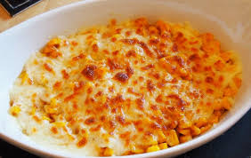

If you have a hankering for crispy on the outside, creamy on the inside, perfectly salted French Fries, then look no further. I have a homemade Finger Chips recipe that will rival anything the fast food chains can offer, all from the comfort of your own home. I share both the classic deep frying method and the healthier air fried technique to make everyone’s favorite French Fries.
Stir together warm water and sugar in a medium bowl. Soak potatoes in water mixture for 15 minutes. Remove potatoes from water and dry thoroughly on paper towels.
Heat oil in a deep-fryer to 375 degrees F (190 degrees C).
Cook potatoes in hot oil until golden, 5 to 6 minutes. Drain on paper towels and season with salt.
You can watch the directions below 👇Learn how to make a very popular side dish and drinking snack, Korean Corn Cheese. This dish is coated with butter and loaded with cheese, resulting in a delightful, tasty, and comforting flavor. Try it today! |
 | Ingredient
|
1.Preheat the oven to 400˚F. 2.Combine all the ingredients into a mixing bowl and stir together. Season with salt and pepper and give it one more good stir. 3.Pour mixture into a lightly greased baking dish. 4.Bake corn cheese for 10 minutes to melt the cheese and heat through. 5.Transfer the dish into the broiler and broil for about 2 minutes to make it bubbly and brown on top. 6.THAT’S IT! You can now serve the delicious Korean corn cheese to some happy people!
Created by Thawtar Shoon Mya🐱